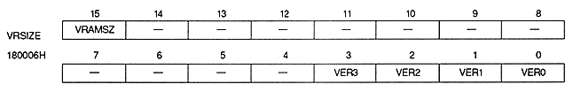

VRAM size register specifies the VRAM capacity used in the system. This is a 16-bit readable / writable register at address 180006H. However, bits 3 to 0 are read-only bits. After power-on or reset, the value of bit 15 (VRAMSZ) is cleared to 0, so be sure to set it.

VRAM size bit : VRAM size bit (VRAMSZ), bit 15
Specify the VRAM capacity used for the system.
VRAMSZ
VRAM capacity
0
4Mbit
1
8Mbit
∙ Be sure to set this bit before writing data to VRAM.
Version number bit : Version number bit (VER3 ~ VER0), bits 3 ~ 0
Indicates the version number of VDP2. Initially it is 0.